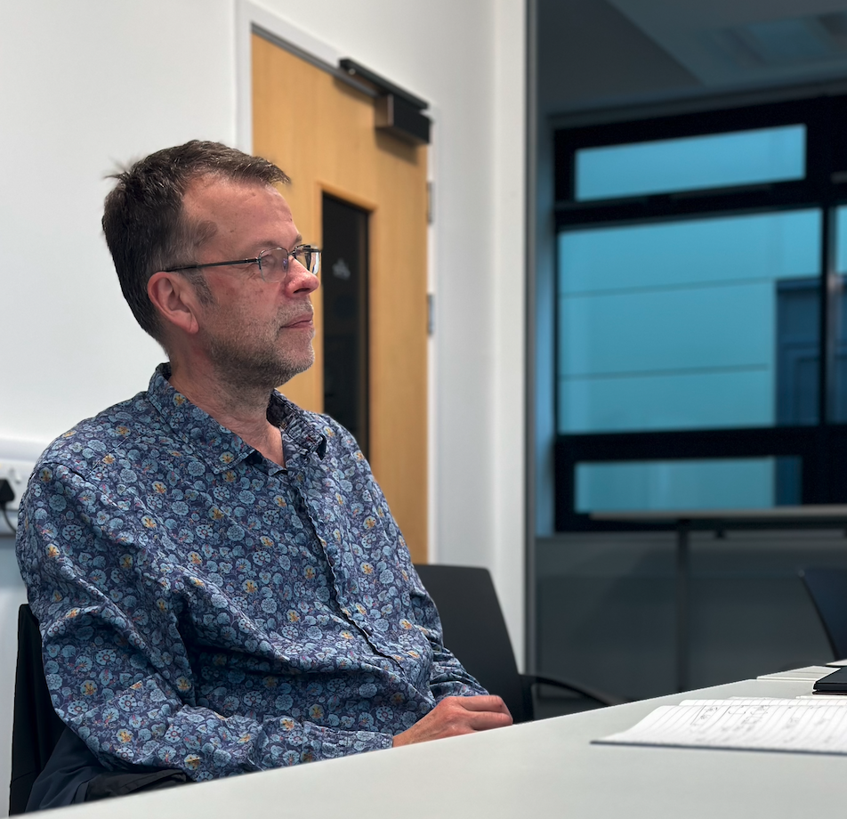

|
I am a Professor in Artificial Intelligence (AI) for Healthcare and the Director of Surrey DataHub at the University of Surrey, United Kingdom. As a leader in AI & One Health research, I am dedicated to deriving insights that enhance the health and welfare of both humans and animals. |
 |
{kind=link}
Director of Surrey DataHub:
Leading the Digital Innovation Hub for Animal Health (DIHAH).
Pioneering data analytics and AI applications that enhance the interpretation of diverse animal and veterinary data. This encompasses information from veterinary records, wearables, and vast social media analyses.
Core Surrey DataHub Research Team:
- Travis Street- Software Developer and Strategy Manager
- Georgina Cherry- Data Scientist, Information Science
- Dr Taran Rai- Data Scientist, Applied AI Lead
- Luke Boyden- Data Analyst and Statistician
- Jake Cumber- Research Assistant
Lead Academic for Medical Imaging & Healthcare:
Guiding a dedicated research team in AI/ML strategies for human and animal health. Our areas of emphasis include:
- PET/CT-based staging, outcome forecasting, and tumour identification.
- Delving into explainable AI.
- AI-driven research on sleep patterns and their correlation with dementia.
- Computational Pathology.
Current Research Team:
- Ian Ackerley, PhD Candidate
- Jake Cumber, PhD Candidate
- Robert John, PhD Candidate
- Charlie Baskerville, PhD Candidate
Past Research Team:
- Dr Mehran Taghipour Gorjikolaie, Research Fellow, 2023
- Dr Taran Rai, 2022
- Dr Sara Mahvash Mohammadi, 2021
- Dr Michaela Spiteri, 2017
- Dr Fatemeh Tahavori, 2017
- Dr Rhodri Smith, 2017
- Dr Michela Esposito, 2015
- Dr Alaleh Rashidnasab, 2014
Teaching
- Module leader for EEE3017 YEAR 3 PROJECT
- Module leader for EEEM005 AI and AI programming (Semester 2)
- Other lecturers include Dr #### #### and adjunct lecturer Dr Taran Rai
- MSc, MEng, BEng Dissertation Supervision
- Proud Fellow of the Surrey Institute for People-Centred AI (PAI).
- Honoured to have served as the Chair of the University Ethics Committee from 2018-2022.

|
Vet Times, Allister Web, 16 May, 2023 |

|
@BritishVets Twitter/X, 11 May, 2023 |

|
British Veterinary Association (BVA), 05 May 2023 |

|
University of Surrey press office, 03 April 2023 |

|
MIT Technology Review, Rhiannon Williams, 09 September 2022 |

|
University of Surrey press office, 16 June 2020 |

|
University of Surrey press office, 15 March 2018 |
|
|